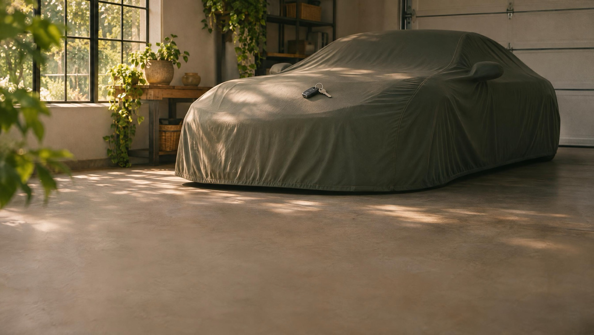

Visual Three boxes left to right. Box 1 "Mind" and box 2 "Target" in green labeled Day 1. Box 3 "Machine" in navy labeled Day 2. Nothing else.
Section02of 14
The snowflake
Who has said 'my market is different'?
2027 Agent Retreat · Paso a paso.The snowflake · D1-06
Visual Plain white, black type. Quotation marks in green.
No two alike.
Every one forms the same way.
Unique, yes. Exempt, no.
The snowflake
Not this
Excuse
vs
This
Experiment
2027 Agent Retreat · Paso a paso.The snowflake · D1-08
Visual Split screen. Left, navy: a brick wall. Right, green: an open door.
Workbook · Open the Mind · Page 6
1Write it.
2Fold it.
3Seal it.
2027 Agent Retreat · Paso a paso.The snowflake · D1-10
Visual A folded paper card with a green seal sticker. Timer 5:00.
The rule · two days
Results first. Opinions second.
Primero pruebas, después opinas.
2027 Agent Retreat · Paso a paso.The snowflake · D1-11
Visual Two stacked words, "Results" big in green, "Opinions" smaller in gray below.
Move2 MIN
The snowflake
Walk it up. Then tell your partner one thing.
2027 Agent Retreat · Paso a paso.The snowflake · D1-12
Visual Photo of a wooden box or envelope labeled "Día 2."
Section03of 14
2026 built it, 2027 runs it
Did you choose them, or did they choose you?
2027 Agent Retreat · Paso a paso.2026 built it, 2027 runs it · D1-13
Visual Photo of a front door with a hand knocking, split with a phone ringing.

2026 built it, 2027 runs it
You built the car. Now drive it.
2027 Agent Retreat · Paso a paso.2026 built it, 2027 runs it · D1-14
Visual A new car in a garage under a cover, keys on the hood.
Open the book4 MIN
Open the Mind
p. 8
Box three is the gold.
2027 Agent Retreat · Paso a paso.2026 built it, 2027 runs it · D1-15
Visual Three empty boxes, the third outlined in green.
Workbook · Open the Mind · Page 8
1Ten names.
2F or R.
2027 Agent Retreat · Paso a paso.2026 built it, 2027 runs it · D1-16
Visual A large F and a large R, side by side, green and navy.
Workbook · Open the Mind · Page 8
Stand on your number of F's.
2027 Agent Retreat · Paso a paso.2026 built it, 2027 runs it · D1-17
Visual A number line 0 to 10 across the screen, green dots.
Commit3 MIN
2026 built it, 2027 runs it
Which one gets switched on in January?
2027 Agent Retreat · Paso a paso.2026 built it, 2027 runs it · D1-19
Visual A light switch, flipped to on, green.
Section 04 / 14
Look back
Look back. Don't flinch.
2027 Agent Retreat · Paso a paso.Look back · D1-20
Visual Car rear-view mirror with a sunrise road behind.
Workbook · Open the Mind · Page 10
1Goal.
2Actual.
3Gap.
4Circle the biggest.
2027 Agent Retreat · Paso a paso.Look back · D1-22
Visual Three column headers, the third with a green circle drawn around it. Timer 6:00.
Workbook · Open the Mind · Page 10
1One win.
2One stop.
3Tell your partner.
2027 Agent Retreat · Paso a paso.Look back · D1-23
Visual Thumbs up and a stop sign, side by side.
Look back
75 to 1
Sample page: sphere dollars back per dollar spent
2027 Agent Retreat · Paso a paso.Look back · D1-24
Visual The number huge in green, small gray label: "sample page, sphere and past clients."
Sample · made-up
Look back · Worked example
One row. One division.
Source
Open houses
Closings
3
GCI
$21,000
Cost
$450
$21,000 ÷ $450 = about 47 to 1
2027 Agent Retreat · Paso a paso.Look back · D1-25
Visual Zoom on a single filled row of the source table (made-up agent, sample numbers): Open houses · 3 closings · $21,000 GCI · $450 cost (signs, snacks, flyers) · return about 47 to 1. Draw the division as a big green fraction.
Hands up
Look back · Quick check
Marisol has two sources. Portal: $1,200 cost, 1 deal, $6,000 GCI. Sphere: $300 cost, 2 deals, $14,000 GCI. Which pays her back more?
APortal, about 5 to 1
BSphere, about 47 to 1
CSame, both made deals
DCan't tell without more months
B. GCI ÷ cost. $14,000 ÷ $300 is about 47. $6,000 ÷ $1,200 is 5.
2027 Agent Retreat · Paso a paso.Look back · D1-25
Workbook · Open the Mind · Page 11
1Every source.
2Divide.
3Pick two and one.
2027 Agent Retreat · Paso a paso.Look back · D1-26
Visual Two green up arrows, one red scissors icon. Timer 8:00.
Workbook · Open the Mind · Page 11
1Defend it.
2Numbers only.
2027 Agent Retreat · Paso a paso.Look back · D1-27
Visual A judge's gavel, or a boxing glove, light and playful.
Section05of 14
Your number and your plan
¿Por quién lo haces?
2027 Agent Retreat · Paso a paso.Your number and your plan · D1-29
Visual Full-bleed photo of a family at a front door with keys (stock or one of your closings with written OK).
Workbook · Open the Mind · Page 13
1Your closings.
2Who it changes.
2027 Agent Retreat · Paso a paso.Your number and your plan · D1-31
Visual Three empty cards labeled with icons only: a house, a soccer ball, a mirror.
Sample · made-up
Your number and your plan · Worked example
0.75, not 75.
$82,400 ÷ 75 = $1,099
$82,400 ÷ 0.75 = $109,867
Keep 75%? Divide by 0.75. That is the GCI you need.
2027 Agent Retreat · Paso a paso.Your number and your plan · D1-32
Visual Zoom on the bottom of a made-up receipt (sample numbers): Needed after split $82,400 ÷ 0.75 = $109,867. Circle the 0.75 in green, cross out a "75" in red.
Workbook · Open the Mind · Page 13
1Build your receipt.
2Partner runs the math.
2027 Agent Retreat · Paso a paso.Your number and your plan · D1-33
Visual A paper receipt, long, curling. Timer 8:00.
Your number and your plan
5 / a day.
2027 Agent Retreat · Paso a paso.Your number and your plan · D1-34
Visual The number 5 filling half the screen, green. "a day" small underneath.
Your number and your plan
1GCI
2closings
3agreements
4appointments
5conversations
2027 Agent Retreat · Paso a paso.Your number and your plan · D1-35
Visual A five-rung ladder, labels only, no numbers. The bottom rung glows green.
Workbook · Open the Mind · Page 14
1Down the ladder.
2Then pick your three.
2027 Agent Retreat · Paso a paso.Your number and your plan · D1-36
Visual The same ladder, now with blanks. Timer 8:00.
Move3 MIN
Your number and your plan
Stand up. Your year in one breath.
2027 Agent Retreat · Paso a paso.Your number and your plan · D1-37
Visual A microphone, or a person speaking with a fist raised.
Section06of 14
Your rhythm
What eats your 9 AM?
2027 Agent Retreat · Paso a paso.Your rhythm · D1-38
Visual A clock at 9:00 with a giant bite taken out of it.
Your rhythm
Your calendar is the boss.
2027 Agent Retreat · Paso a paso.Your rhythm · D1-39
Visual A phone calendar screenshot with a green block every morning, Monday to Friday.
Workbook · Open the Mind · Page 15
1Green first.
2Same hours, five days.
2027 Agent Retreat · Paso a paso.Your rhythm · D1-41
Visual A blank weekly grid with one green row lit across Monday to Friday. Timer 5:00.
Workbook · Open the Mind · Page 15
1Phones out.
2Make it repeat.
3Now.
2027 Agent Retreat · Paso a paso.Your rhythm · D1-42
Visual The phone "repeat every weekday" setting, zoomed.
Your rhythm
Every day. Every Monday.
2027 Agent Retreat · Paso a paso.Your rhythm · D1-43
Visual Two columns. Left: a sun icon with six small dots (the daily list). Right: a single Monday calendar icon with "30" on it.
Commit3 MIN
Your rhythm
Sin bloque verde, no hay café.
2027 Agent Retreat · Paso a paso.Your rhythm · D1-44
Visual A green block icon next to a coffee cup. Playful.
Section07of 14
Identity: who you are becoming
Who hits the number you wrote this morning?
2027 Agent Retreat · Paso a paso.Identity: who you are becoming · D1-46
Visual Full-bleed photo of a person looking in a mirror, slightly out of focus.
Identity: who you are becoming
Hire the 2027 you.
2027 Agent Retreat · Paso a paso.Identity: who you are becoming · D1-47
Visual An empty interview chair facing a desk, warm light.
Sample · made-up
Identity: who you are becoming · Worked example
Write it like it's already true.
I am the agent who…
calls back every lead before 7 PM, even on game nights.
2027 Agent Retreat · Paso a paso.Identity: who you are becoming · D1-48
Visual Zoom on one filled box (made-up agent): "I am the agent who... calls back every lead before 7 PM, even on game nights." Green underline under "calls back."
Workbook · Identity · Page 2
1Four boxes.
2Three words.
2027 Agent Retreat · Paso a paso.Identity: who you are becoming · D1-49
Visual Four empty boxes, three blank lines below. Timer 7:00.
Story
December 31, 2027.
2027 Agent Retreat · Paso a paso.Identity: who you are becoming · D1-50
Visual A calendar page torn to Dec 31, confetti, a sunset.
Workbook · Identity · Page 2
1Write next New Year's Eve.
2Past tense.
2027 Agent Retreat · Paso a paso.Identity: who you are becoming · D1-51
Visual Timer 3:00 over a blurred fireworks photo.
Workbook · Identity · Page 2
1Read it to your partner.
2Then find a quiet corner.
2027 Agent Retreat · Paso a paso.Identity: who you are becoming · D1-52
Visual A phone voice memo screen, red record button.
Commit1 MIN
Identity: who you are becoming
Every morning, 7 AM. Press play.
2027 Agent Retreat · Paso a paso.Identity: who you are becoming · D1-53
Visual An alarm clock at 7:00 next to a phone.
Section08of 14
Your story and your sentence
Why did your last client pick you?
2027 Agent Retreat · Paso a paso.Your story and your sentence · D1-54
Visual Two business cards side by side, identical, one with a handwritten note on it.
Your story and your sentence
They can beat your numbers. Not your story.
2027 Agent Retreat · Paso a paso.Your story and your sentence · D1-55
Visual A scoreboard with a bigger number on the other side, and a single family photo in front of it.
Your story and your sentence
1Origin
2Turning point
3Belief
4Voice
5Mission
2027 Agent Retreat · Paso a paso.Your story and your sentence · D1-57
Visual Five layers of earth in a cross-section, deepest at the bottom glowing green.
Workbook · Personal brand · Page 4
1By hand.
2Phone face down.
2027 Agent Retreat · Paso a paso.Your story and your sentence · D1-58
Visual A pen on paper, coffee cup. Timer 10:00.
Workbook · Personal brand · Page 4
Coffee or commercial?
2027 Agent Retreat · Paso a paso.Your story and your sentence · D1-59
Visual A coffee cup on the left, a TV with an infomercial on the right.
Your story and your sentence
1Who
2Where
3What result
4Why you
2027 Agent Retreat · Paso a paso.Your story and your sentence · D1-60
Visual Four boxes in a row, icons: a person silhouette, a map pin, a key, a checkmark.
Sample · made-up
Your story and your sentence · Worked example
Two sentences. Two cities.
Milwaukee
I help Bay View condo owners move up to a house without moving twice.
Proved by a written move plan.
Florida
I help Poinciana renters turn their rent into a payment they own.
Proved by a payment worksheet before we tour.
2027 Agent Retreat · Paso a paso.Your story and your sentence · D1-61
Visual Two cards (made-up agents). Milwaukee card: "I help Bay View condo owners move up to a house without moving twice." Florida card: "I help Poinciana renters turn their rent into a payment they own." Under each, part 4 in small type: "proved by a written move plan" and "proved by a payment worksheet before we tour."
Workbook · Personal brand · Page 6
1Four parts.
2One sentence.
2027 Agent Retreat · Paso a paso.Your story and your sentence · D1-62
Visual The blank sentence frame with three underscores, large. Timer 6:00.
Workbook · Personal brand · Page 6
1Post it.
2Walk the wall.
3Check the ones that stick.
2027 Agent Retreat · Paso a paso.Your story and your sentence · D1-63
Visual A wall covered in sticky notes, a hand adding a green check.
Your story and your sentence
Position first. Colors later.
2027 Agent Retreat · Paso a paso.Your story and your sentence · D1-64
Visual A paint swatch fan, grayed out, next to a bold green map pin.
Section09of 14
Your storefront
Who looked you up before they called?
2027 Agent Retreat · Paso a paso.Your storefront · D1-65
Visual A phone in a hand, Instagram search bar with an agent's name typed.
Your storefront
5 seconds.
2027 Agent Retreat · Paso a paso.Your storefront · D1-66
Visual A stopwatch, huge, green.
Your storefront
Not this
Before
vs
This
After
2027 Agent Retreat · Paso a paso.Your storefront · D1-67
Visual Two made-up profile mockups side by side (not the workbook sample). Before: logo as profile photo, bio "Realtor 🏡✨ Living my best life | DM for info," five links. After: smiling face filling the circle, name field "Ana Torres | Kissimmee Homes," bio line 1 is a brand sentence, one trigger word, one link, three pinned covers readable.
Workbook · Personal brand · Page 6
1Cover your name.
2Last nine posts.
3Mine or anyone's?
2027 Agent Retreat · Paso a paso.Your storefront · D1-68
Visual A grid of nine squares, some marked M in green, some A in gray.
Workbook · Personal brand · Page 8
1Swap phones.
2Score them out of 20.
2027 Agent Retreat · Paso a paso.Your storefront · D1-69
Visual Two phones crossing, a scorecard. Timer 5:00, then reset.
Workbook · Personal brand · Page 8
1Fix your weakest three.
2Right now.
2027 Agent Retreat · Paso a paso.Your storefront · D1-70
Visual A wrench icon over a phone. Timer 7:00.
Open the book2 MIN
Personal brand
p. 7
Google: claimed? Named right?
2027 Agent Retreat · Paso a paso.Your storefront · D1-71
Visual A map pin with a star rating under it.
Commit3 MIN
Your storefront
Three past clients. Three texts. Now.
2027 Agent Retreat · Paso a paso.Your storefront · D1-72
Visual Three speech bubbles, sent checkmarks in green.
Section10of 14
What you post, getting known locally
Who likes your 'Just Sold' posts?
2027 Agent Retreat · Paso a paso.What you post, getting known locally · D1-74
Visual A phone with a "SOLD" tile and a row of heart reactions.
Sample · made-up
What you post, getting known locally · Worked example
Same closing. Told as a story.
1The home1950s Cape Cod, West AllisPool home, Kissimmee
2The problemOld water stains scared buyers offGreen pool in the old photos
3The fixWe got the dry-basement report up frontCleaned it, reshot at golden hour
4The resultThree offers the first weekendUnder contract in a week
2027 Agent Retreat · Paso a paso.What you post, getting known locally · D1-75
Visual Four short lines stacked, made-up sale. Milwaukee version: "1950s Cape Cod, West Allis · Old water stains scared buyers off · We got the dry-basement report up front · Three offers the first weekend." Florida version: "Pool home, Kissimmee · Green pool in the old photos · Cleaned it, reshot at golden hour · Under contract in a week."
What you post, getting known locally
1Authority
2Lifestyle
3Neighborhood
4+ you
2027 Agent Retreat · Paso a paso.What you post, getting known locally · D1-76
Visual Three equal columns and a small fourth slice labeled "10%."
Workbook · Personal brand · Page 10
1One sale.
2Four lines.
3One area.
2027 Agent Retreat · Paso a paso.What you post, getting known locally · D1-77
Visual Four empty lines, a map pin. Timer 6:00.
Workbook · Personal brand · Page 10
1Read it.
2Partner: would you call?
2027 Agent Retreat · Paso a paso.What you post, getting known locally · D1-78
Visual A phone ringing, green.
What you post, getting known locally
Be the face they know.
2027 Agent Retreat · Paso a paso.What you post, getting known locally · D1-79
Visual Full-bleed photo of an agent at a café counter, barista smiling, laptop open.
Workbook · Personal brand · Page 12
1Two partners.
2Real dates.
3Text them now.
2027 Agent Retreat · Paso a paso.What you post, getting known locally · D1-81
Visual A calendar with two dates circled in green, a phone with "sent."
Commit2 MIN
What you post, getting known locally
Show your partner the sent text.
2027 Agent Retreat · Paso a paso.What you post, getting known locally · D1-82
Visual Two phones side by side, both showing "Delivered."
Section 11 / 14
Seguimiento: your people, stages and rhythm
La fortuna está en el seguimiento.
2027 Agent Retreat · Paso a paso.Seguimiento: your people, stages and rhythm · D1-83
Visual Section cover photo style: an agent on the phone, smiling, a coffee and a printed list.
Seguimiento: your people, stages and rhythm
Who in your phone should have been your client?
2027 Agent Retreat · Paso a paso.Seguimiento: your people, stages and rhythm · D1-84
Visual A phone contact list with one name highlighted, a "Sold" sign blurred in the background.
Seguimiento: your people, stages and rhythm
1Stagewhen
2Circlehow close
2027 Agent Retreat · Paso a paso.Seguimiento: your people, stages and rhythm · D1-86
Visual Two dials. Left dial: a clock face with stage names as small ticks. Right dial: three concentric circles (inner, middle, outer).
Open the book
Seguimiento
p. 2
January: one evening, three passes.
2027 Agent Retreat · Paso a paso.Seguimiento: your people, stages and rhythm · D1-87
Visual A contact list with three green check marks next to it, one per pass.
Workbook · Seguimiento · Page 2
1Trade phones.
2Five contacts.
3Stage and circle, out loud.
2027 Agent Retreat · Paso a paso.Seguimiento: your people, stages and rhythm · D1-88
Visual Two phones crossing, five dots.
Workbook · Seguimiento · Page 4
1Stand.
2Two lines.
3Five seconds per answer.
2027 Agent Retreat · Paso a paso.Seguimiento: your people, stages and rhythm · D1-89
Visual A stopwatch at 0:05, two arrows facing each other.
Seguimiento: your people, stages and rhythm
No date, no follow-up.
2027 Agent Retreat · Paso a paso.Seguimiento: your people, stages and rhythm · D1-90
Visual A phone call ending screen vs. a calendar invite being created.
Commit2 MIN
Seguimiento: your people, stages and rhythm
Pick your sort night.
2027 Agent Retreat · Paso a paso.Seguimiento: your people, stages and rhythm · D1-91
Visual A January calendar, one evening circled in green.
Section12of 14
Hands up
The first 7 days, then never stop
New lead. How fast do you call?
5 min
1 hour
Same day
Tomorrow
2027 Agent Retreat · Paso a paso.The first 7 days, then never stop · D1-92
Visual Four big options on screen: "5 min · 1 hour · Same day · Tomorrow."
The first 7 days, then never stop
30 vs 3
Personal touches in four months vs. where most agents stop
2027 Agent Retreat · Paso a paso.The first 7 days, then never stop · D1-93
Visual "30" huge in green on the left, "3" small in gray on the right.
The first 7 days, then never stop
Call in 5 minutes. Then every day for 7 days.
Day 1
Call in 5 min
Text
Evening call
Day 2
Morning call
3 homes text
Evening call
Day 3
Midday call
Video text
DM for ad leads
Days 4 to 6
1 call a day
New time each day
Voicemail on call 4
Day 7
Call
Two-times text
Counts: calls, texts, video texts, voicemails, your own DMs. Emails and automatic messages don't.
2027 Agent Retreat · Paso a paso.The first 7 days, then never stop · D1-94
Visual Seven dots in a row. The first three are big and green with three small marks under each, the last four are smaller and navy with one mark each. A long gray arrow continues after day 7 labeled "never stop."
Hands up
The first 7 days, then never stop · Quick check
Which one counts as a touch?
AAn automatic drip email
BYour monthly newsletter
CA 20-second video text that says his name
DA like on his post
C. A touch is you, live or personal. Automatic messages and likes do not count.
2027 Agent Retreat · Paso a paso.The first 7 days, then never stop · D1-94
Live3 MIN
Live demo
Live: call number one.
2027 Agent Retreat · Paso a paso.The first 7 days, then never stop · D1-95
Visual A phone with a green "calling" screen.
Workbook · Seguimiento · Page 6
1Eight touches.
2Out loud.
3Make them yours.
2027 Agent Retreat · Paso a paso.The first 7 days, then never stop · D1-96
Visual Eight small speech bubbles in two rows. Timer 10:00.
The first 7 days, then never stop
Banned: 'just checking in.'
2027 Agent Retreat · Paso a paso.The first 7 days, then never stop · D1-97
Visual The phrase in a red circle with a slash through it.
Hands up
The first 7 days, then never stop · Quick check
Day 5. Ana has not answered. Which text do you send?
A"Just checking in!"
B"Hi Ana, any update?"
C"Ana, 2 new 3-bedrooms hit today in West AllisKissimmee. Want the links?"
DWait for her to reach out
C. Bring something new. Her name, a real reason, one easy yes.
2027 Agent Retreat · Paso a paso.The first 7 days, then never stop · D1-97
Workbook · Seguimiento · Page 6
1Write your opener.
2Say it three times.
2027 Agent Retreat · Paso a paso.The first 7 days, then never stop · D1-98
Visual A pen and a blank line. Timer 3:00.
Commit10 MIN
The first 7 days, then never stop
Ten minutes. Every day. Thirty days. When?
2027 Agent Retreat · Paso a paso.The first 7 days, then never stop · D1-99
Visual A calendar grid with 30 small green checkmarks.
Section13of 14
Always present, your day
What did a business send you that you actually liked?
2027 Agent Retreat · Paso a paso.Always present, your day · D1-100
Visual An open mailbox with a handwritten envelope.
Always present, your day
1Market
2How-to
3Home
4Town
2027 Agent Retreat · Paso a paso.Always present, your day · D1-101
Visual Four weekly icons in a row: a chart, a question mark, a house, a map pin. "Wk 1 · Wk 2 · Wk 3 · Wk 4" under them.
Workbook · Seguimiento · Page 7
1Hand raiser alert.
2Call her.
2027 Agent Retreat · Paso a paso.Always present, your day · D1-102
Visual A heart icon on a listing photo.
Always present, your day
1 in 5 open. 1 in 100 click.
2027 Agent Retreat · Paso a paso.Always present, your day · D1-103
Visual Five envelope icons with one open; a row of 100 dots with one green.
Workbook · Seguimiento · Page 8
1Twelve months.
2Twelve touches.
2027 Agent Retreat · Paso a paso.Always present, your day · D1-104
Visual A 12-month strip, a few months filled with icons (a pie, a card, a cookout). Timer 6:00.
Always present, your day
Top to bottom. Down to zero.
2027 Agent Retreat · Paso a paso.Always present, your day · D1-105
Visual A list of four colored bars in order, a downward arrow, and a big "0" at the bottom.
Always present, your day
8 of 10
2027 Agent Retreat · Paso a paso.Always present, your day · D1-106
Visual Ten chairs at a table, eight filled, two empty.
Sample · made-up
Always present, your day · Worked example
Find the smallest percent.
Leads220
Conversations9041%
Set3640%
Held2775%
Signed1452%
Closed1179%
The leak is the smallest percent: conversations to set.
2027 Agent Retreat · Paso a paso.Always present, your day · D1-107
Visual A made-up funnel (sample numbers): Leads 220 → Conversations 90 (41%) → Set 36 (40%) → Held 27 (75%) → Signed 14 (52%) → Closed 11 (79%). The 40% is circled in green.
Workbook · Seguimiento · Page 10
1Your 2026.
2Find the leak.
2027 Agent Retreat · Paso a paso.Always present, your day · D1-108
Visual A dripping faucet. Timer 6:00.
Always present, your day
Every closing is the next lead.
2027 Agent Retreat · Paso a paso.Always present, your day · D1-109
Visual A circular arrow made of house keys.
Commit1 MIN
Always present, your day
Your Q1 fix, in one sentence.
2027 Agent Retreat · Paso a paso.Always present, your day · D1-110
Visual A green wrench icon.
Section14of 14
Table Whip
Day 1 close
What did you do today for the first time?
2027 Agent Retreat · Paso a paso.Day 1 close · D1-111
Visual A sunrise over a road, warm.
Commit2 MIN
Day 1 close
Before you go: say it, write one question.
2027 Agent Retreat · Paso a paso.Day 1 close · D1-112
Visual Three icons: headphones, a phone, a question mark.
Day 1 close
Hasta mañana. 8:00 en punto.
2027 Agent Retreat · Paso a paso.Day 1 close · D1-113
Visual Group photo moment: take a live group photo right now. It opens Day 2.